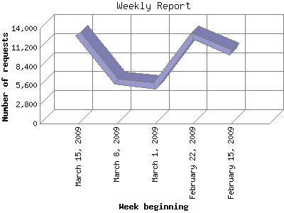

The Weekly Report identifies the activity for each week within the report
time frame. Remember that one page hit can result in several server requests
as the images for each page are loaded.
Note: Depending on the
report time frame for this report the first and last week may not represent
a full seven day week, resulting in lower hits.

| Week beginning | Number of requests | Number of page requests | |
|---|---|---|---|
| 1. | February 15, 2009 | 10,492 | 1,606 |
| 2. | February 22, 2009 | 12,820 | 1,937 |
| 3. | March 1, 2009 | 5,544 | 1,891 |
| 4. | March 8, 2009 | 6,133 | 1,104 |
| 5. | March 15, 2009 | 13,167 | 3,471 |
Most active week beginning March 15, 2009 : 3,471 pages sent. 13,167 requests handled.
Weekly average: 2,001 pages sent. 9,631 requests handled.
This report was generated on March 20, 2009 06:23.
Report time frame February 15, 2009 07:17 to March 19, 2009 23:47.
| Web statistics report produced by: analog 6.0 / Report Magic 2.21 |